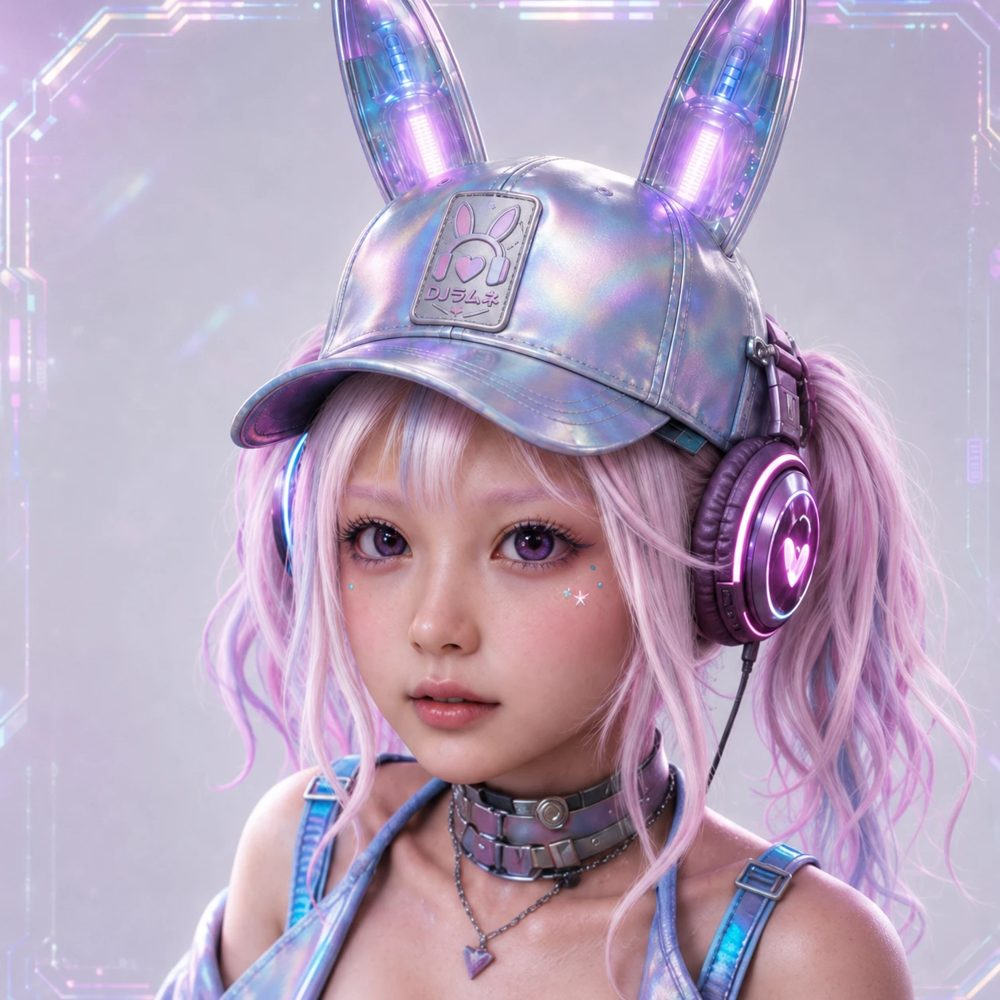

らんぴょんの妹DJ RAMUNE
DJらむね
らんぴょんの妹。月でDJをしています。
事務所は、歌とダンスのアイドルとして売り出したい。でも本人が歌いたいのは、かっこいいラップだけ。しぶしぶ踊りながら、地球でのデビューを夢見ています。
- AGENCY
- Vocaria Planet Agency
- ROLE
- 歌手 / DJ
- FROM
- 月生まれ・月育ち
- HEIGHT
- 156cm